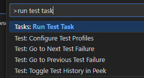
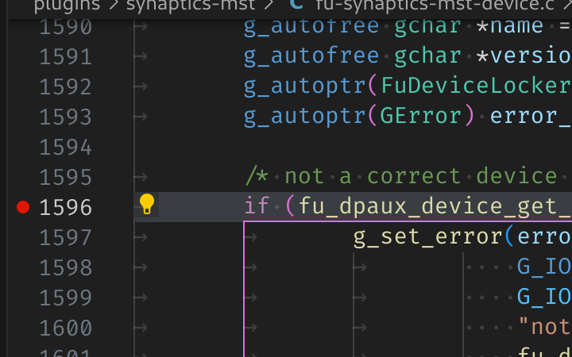
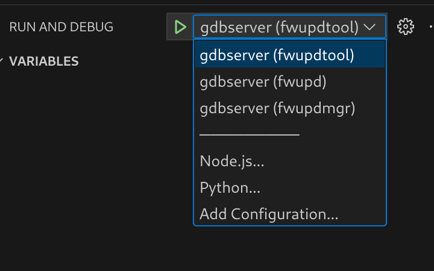
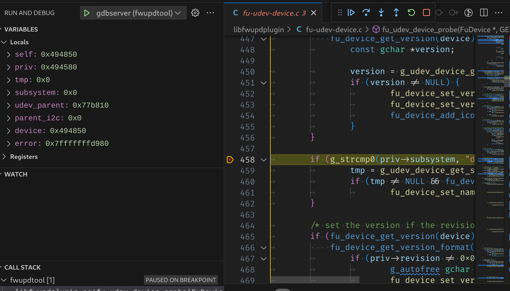
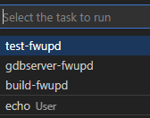

Building & Debugging fwupd
These instructons below can either be used by the silicon vendor, or the consulting company to debug existing and new plugins. Sometimes new hardware is only supported in the development version of fwupd which may not even be available as a Snap or Flatpak yet.
Prerequisites
-
A PC with Linux (preferably the latest version of Fedora) installed bare metal (i.e. not in VirtualBox or VMWare)
-
Working access to the internet
-
A user account (we’ll use
uas the example here) with administrator permissions
Setup fwupd development environment
A fwupd development environment is setup in a virtualenv to avoid development work for fwupd from conflicting with any system fwupd installation. All builds will occur in venv/build and all installs in venv/dist.
To set it up follow the below steps:
cd ~
git clone https://github.com/fwupd/fwupd.git
cd fwupd
./contrib/setup
Building
After the development environment has been setup you can enter it by running:
source venv/bin/activate
You can tell you are in the development environment by looking at the start of your prompt for this prefix:
(fwupd)
To build the project a script is included that will configure and build the project with default settings.
build-fwupd
To run the project test suite a script is included:
test-fwupd
If you want to leave the development environment at any time you can run:
deactivate
Running binaries
The fwupd project is split into three main components:
-
fwupd: The binary that’s running in the background, as root
-
fwupdmgr: The client tool that end-users use to interact with the running
fwupdbinary, as a normal user -
fwupdtool: The debugging tool developers use to find problems and to run new code, as root
The fwupdtool binary does most of the things that fwupdmgr does, but without talking to the system fwupd instance. It is a lot easier to run fwupdtool with just one plugin (e.g. --plugins vli) than running the daemon and all the plugins. You might have to wait 5 seconds and then read thousands of lines of debugging to see the printf() you added in a new plugin with the daemon, but with fwupdtool --plugins vli --verbose get-devices it’ll be in a few lines, and instant.
Within the development environment wrappers have been setup to allow launching fwupd, fwupdtool or fwupdmgr very similar to a host system.
There are 3 main differences to note:
- The
systemdservice will not run. That means that the daemon needs to be manually launched in the environment. - dbus activation doesn’t work. This mean that if you are testing the daemon (
fwupd) and client (fwupdmgr) interaction you need to have two terminal tabs opened each in the development environment activated. One tab would run the daemon, and one would run the client. fwupdandfwupdtoolwill be automatically started as root (IE withsudo).
With those differences in mind all 3 binaries can just be launched like normal:
fwupdtool get-devices
fwupd
fwupdmgr get-devices
Using fwupdtool
To get the list of devices from one specific plugin I would do:
fwupdtool --plugins vli get-devices --verbose
This outputs lots of text onto the console like:
10:51:49:0584 FuMain Lenovo ThinkPad WS Dock
DeviceId: 73ef80b60058b4f18549921520bfd94eaf18710a
Guid: dd1f77bd-88ef-5293-9e34-1fe5ce187658 <- USB\VID_17EF&PID_305A&REV_5011
Guid: 1c09a12d-e58a-5b4d-84af-ee3eb4c3c68b <- USB\VID_17EF&PID_305A
Guid: 6201fecc-1641-51f6-a6d2-38a06d5476bf <- VLI_USBHUB\SPI_C220
Guid: c9caa540-6e27-5d40-a322-47eaeef84df0 <- USB\VID_17EF&PID_305A&SPI_C220&REV_5011
Guid: cfa1e12c-4eb9-5338-8b23-02acc5423ccb <- USB\VID_17EF&PID_305A&SPI_C220
Summary: USB 3.x Hub
Plugin: vli
Protocol: com.vli.usbhub
Flags: updatable|registered|can-verify|can-verify-image
Vendor: LENOVO
VendorId: USB:0x17EF
Version: 50.11
VersionFormat: bcd
Icon: audio-card
InstallDuration: 10
Created: 2019-12-20
Using fwupdtool raw firmware blob (i.e. not the cabinet archive with metadata) can be installed on the device using:
fwupdtool --verbose --plugins vli \
install-blob /home/u/the-firmware.bin 73ef80b60058b4f18549921520bfd94eaf18710a
Firmware Parsing
You can also parse the raw .bin files using fwupdtool which has access to all the available firmware parsers built into all plugins. For example:
fwupdtool firmware-parse /home/user/VL105_APP6_8C_09_08_06_20190815.bin
Choose a firmware type:
0. Cancel
1. conexant
2. 8bitdo
3. synaprom
4. rmi
5. wacom
6. vli-pd
7. raw
8. altos
9. srec
10. ihex
11. vli-usbhub
12. vli-usbhub-pd
12<enter>
FuVliUsbhubPdFirmware:
Version: 140.9.8.6
ChipId: VL105
VID: 0x2109
PID: 0x105
FuFirmwareImage:
Data: 0xc000
Using fwupdmgr
You can perform the end-to-end tests with two terminals open to the fwupd development environment. In the first do:
fwupd --verbose
and in the second you can do:
fwupdmgr install ~/foo.cab
This will send the firmware archive from the locally built fwupdmgr to the locally built daemon using a file descriptor, which will call the new plugin code with the firmware blob in the archive. The daemon terminal will also show lots of useful debugging during this process.
Using Visual Studio code to build and test
During build time a set of tasks will have been created for use with Visual Studio Code.
The default build task which is triggered by using ctrl-shift-b will build the project with default settings. The default test task can be triggered from the command palette to run the test suite. Open the command palette with ctrl-shift-p and type Run test task and hit enter. This will launch the daemon in a terminal window. 
Using Visual Studio Code to debug
The debugger that is part of Visual Studio Code is really helpful for debugging issues.
During build time a set of launch targets will have been created for use with Visual Studio Code.
All 3 binaries have the ability be launched with a debugger attached as a user by using DEBUG=1 in the environment.
debugging fwupdtool and fwupdmgr
For example to debug fwupdtool you would launch it like this:
(fwupd) u@fedora:~/fwupd$ DEBUG=1 fwupdtool get-devices
Process /home/u/fwupd/venv/bin/../dist/bin/fwupdtool created; pid = 595311
Listening on port 9091
This will configure gdbserver to listen on a local port waiting for a debugger to connect.
Launch vscode in the same directory as the Git checkout. After it’s launched, set a source breakpoint.

Then use the run and debug button (or ctrl-shift-d) to open up the debugger. From the debugger choose the tool to use.

Press the green start button (or use F5) to start debugging. The debugger will attach to the process you launched and stop where you left off.

debugging fwupd (daemon)
For debugging the daemon, a helper task is also included to launch the daemon with the DEBUG environment variable set within vscode.
Open the command palette with ctrl-shift-p and type Run task and hit enter. Select the gdbserver-fwupd task.
This will launch the daemon in a terminal window.

Then use the run and debug button (or ctrl-shift-d) to open up the debugger. From the debugger choose gdbserver (fwupd).